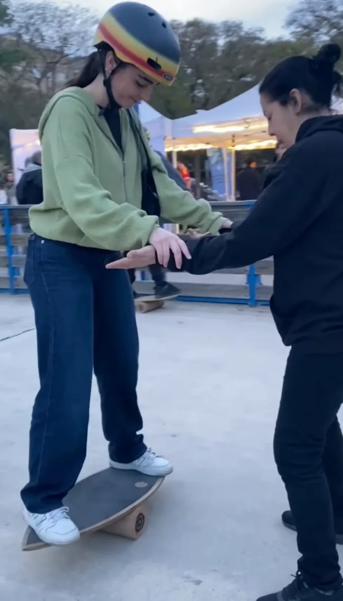
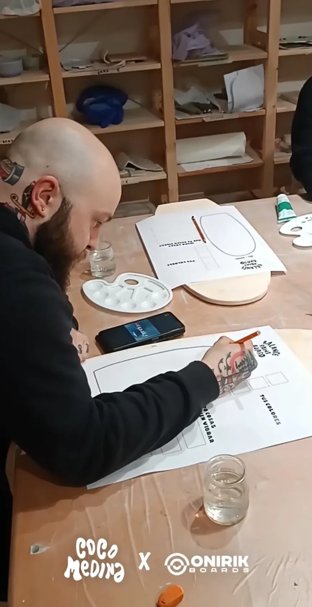
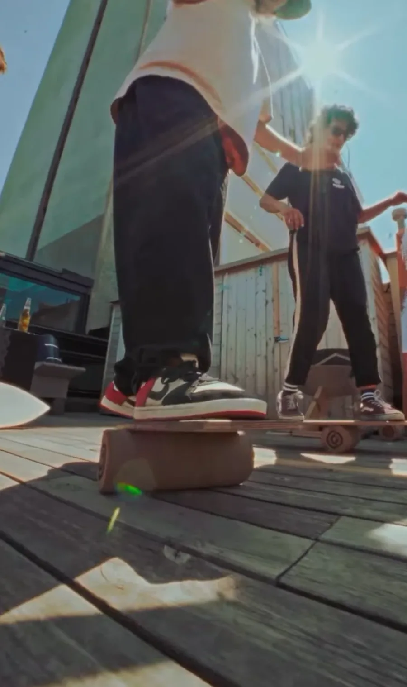

Col·laboracions
Idees que prenen forma quan les compartim.
Projectes compartitsCreem alguna cosa juntes?
Marques, artistes i persones amb ganes de fer coses diferents.
Proposa una col·laboracióExperiències per compartir, crear i descobrir noves maneres de trobar l'equilibri.
Aprèn, experimenta i comparteix.

Escoles · Grups Equilibri Tallers grupals i classes privades, amb la teva taula o la nostra.
Fet a mà Fabricació artesanal Construeix la teva pròpia balance board al taller. Cos i ment Yoga El balanceboard com a eina per treballar l'equilibri interior.
Comunitat Tricks & lifestyle Trucs, reptes i la vida sobre la taula.Idees que prenen forma quan les compartim.
Projectes compartitsMarques, artistes i persones amb ganes de fer coses diferents.
Proposa una col·laboració